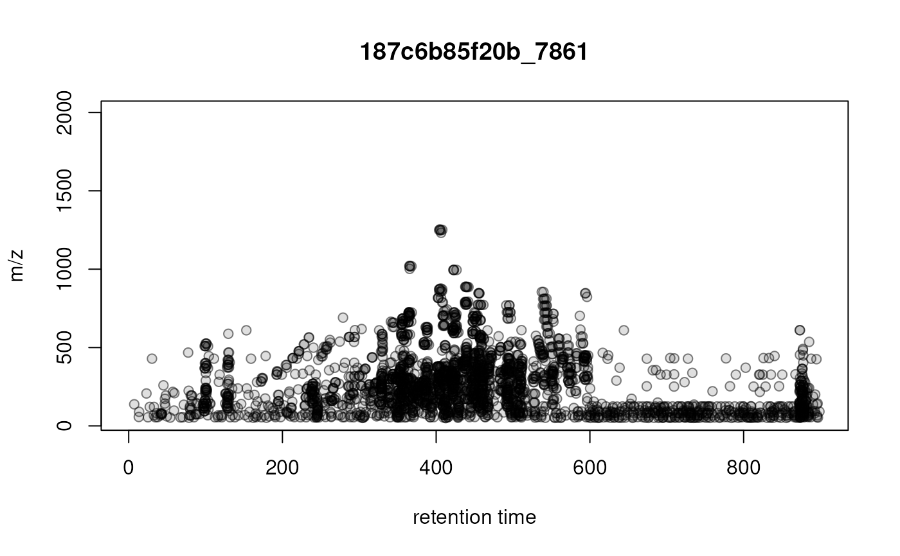

General visualization of precursor ions of LC-MS/MS data
Source:R/XcmsExperiment-plotting.R
plotPrecursorIons.RdSimple visualization of the position of fragment spectra's precursor ion in the MS1 retention time by m/z area.
Usage
plotPrecursorIons(
x,
pch = 21,
col = "#00000080",
bg = "#00000020",
xlab = "retention time",
ylab = "m/z",
main = character(),
...
)Arguments
- x
MsExperimentof LC-MS/MS data.- pch
integer(1)defining the symbol/point type to be used to draw points. Seepoints()for details. Defaults topch = 21which allows defining the background and border color for points.- col
the color to be used for all data points. Defines the border color if
pch = 21.- bg
the background color (if
pch = 21).- xlab
character(1)defining the x-axis label.- ylab
character(1)defining the y-axis label.- main
Optional
characterwith the title for each plot. If not provided (the default), the row names ofsampleData(x)are used. sample.- ...
additional parameters to be passed to the
plotcalls.
Examples
## Load a test data file with DDA LC-MS/MS data
library(MsExperiment)
library(MsDataHub)
fl <- MsDataHub::PestMix1_DDA.mzML()
#> see ?MsDataHub and browseVignettes('MsDataHub') for documentation
#> loading from cache
pest_dda <- readMsExperiment(fl)
plotPrecursorIons(pest_dda)
grid()
## Subset the data object to plot the data specifically for one or
## selected file/sample:
plotPrecursorIons(pest_dda[1L])
